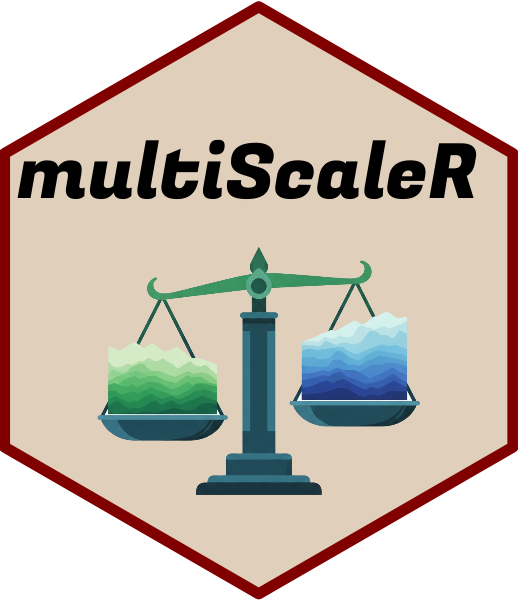

README last updated: 2026-11-11
| CI | Development | CRAN | License |
|---|---|---|---|
 |
Overview
multiScaleR is an R package to identify the scale of effect of spatial environmental variables in regression analyses.
Functions to simulate data with known scales of effect are included with this package.
Installation
Install the CRAN release with:
install.packages("multiScaleR")If installing from GitHub on Windows, you may need Rtools to compile the package from source. Choose the Rtools release that matches your version of R and follow the installation instructions at https://cran.r-project.org/bin/windows/Rtools/.
Then execute the following commands in R:
# Install 'remotes' package, if needed
if (!requireNamespace("remotes", quietly = TRUE)) {
install.packages("remotes", repos = "https://cloud.r-project.org")
}
remotes::install_github("wpeterman/multiScaleR",
build_vignettes = TRUE) # Install & build vignette
library(multiScaleR) # Load the packageThe package vignettes provide worked analyses of simulated data and explain the main workflows.
Kernel distance reporting
Starting with version 0.7.4, kernel_dist(), kernel plots, and the selected summary distance default to dimension = "2d": the radius containing the requested share of an ideal kernel’s total weight on a plane. At 90%, a Gaussian kernel with sigma = 300 m has a planar radius of about 644 m, compared with the original line-based distance of about 493 m. Raster edges, missing cells, cell geometry, and max_D can change the weight actually retained at a site.
Set dimension = "1d" in kernel_dist(), plot_kernel(), plot(fit), or summary(fit) to restore the original definition. Summary opt_dist and opt_distance follow that selection; opt_dist_1d and opt_dist_2d always identify the two definitions explicitly. This reporting switch does not change the fitted sigma, coefficients, or likelihood. Simulation extents, projection windows, and stored optimization warnings retain their historical 1D cutoffs. See vignette("multiScaleR_Guide", package = "multiScaleR") for interpretation and migration examples.
Marginal effects for unmarked models
Version 0.7.4 fixes marginal-effect plots for models with factors such as Year, extra site-ID columns, and repeated site-year rows linked by join_by. Predictors are recovered from the state or abundance formula. Numeric predictors are held at their observed means and categorical predictors at their first observed values in other panels. Factors receive a point and confidence interval for each observed level.
For random-effects models, plots set site effects to zero explicitly. These are conditional predictions, not averages over years, sites, or the random-effect distribution. Their intervals are conditional on the selected scale. See ?plot_marginal_effects for supported prediction types and factor contrast handling. Existing fitted objects can be plotted without rerunning scale optimization.
